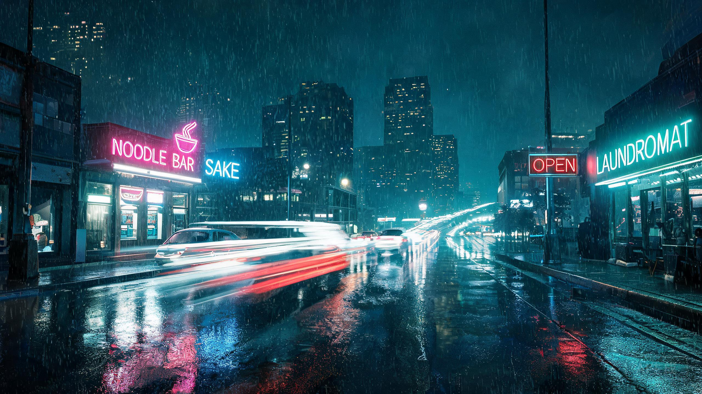
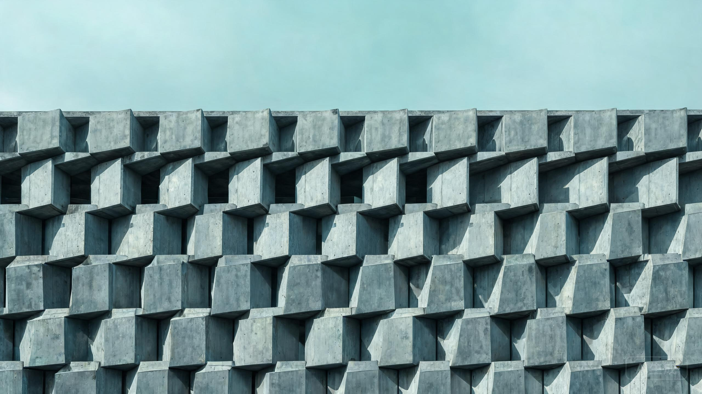

我是一名独立创作者，做短片、写长文、拍照片。 这里是我的作品集，按短视频、Markdown 文章、纯文本短文与图集四种形式归档。
后台可勾选「精选」开关，勾选的作品会出现在这里

用延时摄影记录凌晨两点到四点的城市，霓虹、雨水与空无一人的街道。
从素材收集到成片输出的完整工作流，以及我踩过的三个坑。

九张照片，记录这座城市里被忽略的结构美感。
你好，我是林一。五年前开始用镜头记录生活，后来渐渐发现，文字和图片同样是我表达的一部分。 这个站点是我所有作品的归档地，也是我与世界对话的窗口。
我相信好的内容不需要喧哗。如果你对某个作品感兴趣，或者想聊聊创作，欢迎随时联系我。